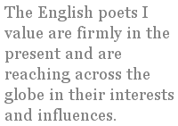

Let’s suppose that you’re in a bookshop, browsing poetry anthologies and you take an “English Poetry” anthology from the shelf. Are you expecting to read poetry from English poets? Most likely, the volume in your hand is not a collection of English poetry but rather poems written in English from a number of countries, or poetry from the nations of the British Isles including Scotland, Wales and Ireland.
It isn’t difficult to find anthologies of Scots, Welsh or Irish poetry and it isn’t uncommon to see reading series or festival themes featuring those countries. I can almost hear the screams of outrage and accusations of imperialistic bias if an English publisher were to express a preference for English poets, yet there are publishers in the Celtic nations who do just that. It seems that — as far as literature is concerned — England is no more than a convenient piece of land that fills in the gap between the Celtic nations and a synonym for Britain. England is one of four nations that make up the British Isles: England is not Britain, nor — contrary to what some would like to believe — does it only consist of London.
I believe it is valid and useful to examine national sensibilities and characters by collecting a nation’s poetic voices. I find voices from other countries stimulating because they are rooted in different cultures than my own and so can show me entirely new things. So why is it so difficult for the poetry world to view England as having poems and poets worth examining in the context of being English?
As with many western capitals, London’s role as a financial, commercial and tourism centre has a homogenising effect so that it can’t realistically be seen as representing the character or culture of England. Outside of London though, England’s culture is rich in lore and wonderfully diverse throughout its regions.
I don’t believe the English character is the privately educated, stiff-upper-lip, play-the-game stereotype so beloved by bad film makers but something much earthier and more individual — something that can be found in its poetry. It would be absurd to attempt the role of an anthology in this space or even to attempt any sort of overview. However, I hope that presenting some “tasters” of contemporary English poets may interest some readers enough to look further.
Boudicca, of course, is our archetypal Englishwoman, so a good place to start is with Jane Holland’s second collection Boudicca & Co.1 The collection is built on a series of poems in Boudicca’s voice which, in Jane’s hands, is modern, and fierce with a wry humour:
A Handful of Bones
They called me ‘Boudicca’
the day we took Camulodunum—
‘Victory!’ My moment of fame.
The men thought it was right,
saying I’d lost my old name
the way some girls lose their virginity;
violently, but enjoying the fight.
That night, I rode some man
until he fled, muttering
something about bite marks.
So I sulked in the dark instead,
listening to the rape
of one of the Roman women.
Later, her body was strewn
across my door
like a red carpet, a love token.
Going out, I trod down hard
on her buckled spine.
Found a handful of bones
they’d left unbroken.
Suicide
In the end, they had to use a crowbar
on my teeth, force the poison in.
They didn’t even bother raping me.
After the first breath, I was high
on mercury, lungs pure silver.
I was radioactive; they could have
found me in the dark. How Suetonius,
that fat Roman dumpling,
must have laughed. The end
was confused. Some screaming, vomit.
It hurt, I know that much.
Nothing else. Just good British dirt
and closing my mouth on it.
It would be a mistake, however, to conclude that we are stuck in legend and history or wedded to some vision of what England used to be, as in the cringe-worthy “Merrie England” of Kingsley Amis’s Lucky Jim. Scattered references to anachronistic bullets, snipers and hand grenades work surprisingly well to show Jane’s “Boudicca” as a non-combatant poet’s exploration of conflict, defence, brutality and of female identity in such circumstances. The English poets I value are firmly in the present and are reaching across the globe in their interests and influences. Here is Jane Holland again, with a response to Mina Loy:
In Response to a Nude Photograph of Mina Loy, 1905
Women poets are not supposed to look like that,
did nobody tell you? The one
with the cigarette is bullish enough
but this, taken naked, face
against the wall with one arse cheek
suggestively raised
is the portrait of a muse, my dear.
In later years, your beauty was eclipsed by age.
Here your skin’s like frost, that white back
and hourglass waist
crying out to be marked, to be photographed.
Did it feel safer like this, turned away
in your nakedness,
to be stared at, lusted after?
‘Leave off looking to men to find out
what you are not,’ you said.
Then let me take you to bed, Mina,
to the ostrich feather bed
of our imagination. There we’ll smoke
and make poetry all day, decadent
in our sticky love,
looking each other in the eye, drinking
each other’s blood
like tea from a china dish, steeped
in what it means to be us, spawning
our poems like fish.
Poetry from the different regions of England can seem very diverse. For example, it can be hard to find an obvious common ground between voices of the industrial north and of the rural south. Yet, from Simon Armitage’s deceptively well-crafted urban laddishness to Alice Oswald’s evocation of Devon’s genius loci in her book-length poem about the river Dart, one can find, I believe, an essential Englishness in an affection for the ordinary people and their bloody-minded individuality that has developed through generations of working families.
Maureen Almond is a poet of the north-east and her fourth collection, The Works,2 which includes a re-visioning of Horace’s Epodes into the streets of working class Teesside, exemplifies this unsentimental affection for England’s people. Her characters weave through the collection, taking Horace’s stories for their own: Big Aggie of the tombstone teeth, lovesick Johnny, ambitious Sid, Barbara who knew all about doing it, and all the others, are feisty and three-dimensional.
Grown-up Girls Below the Railway
(after Horace, Epode III, Parentis olim)
I’ve just heard of the best curse for those who don’t respect
their dads, or give them cheek,
let them eat pigs’ trotters, they taste like poison.
Foundry men must have strong guts
because if I eat them they make me heave.
I tell you, these trotters
covered in dripping, should be in a cauldron,
or else thrown to the dogs.
You remember that night when the two-till-tens knocked off,
and Aggie, an eye on her Billy,
met him in the snug, gave him a pig’s-trotter hug,
made him stink from head to foot,
then as she left to turn their bed down, caressed his shoulders,
clasped her hands round the back of Billy’s neck?
The whole of that snug smelled to high heaven,
and poor Billy with it.
You smell like Stockton Abattoir, Bill lad,
was what all his mates said.
Now Anne, if you get any ideas about my bloke,
don’t be surprised if the next day,
when you go to get your best dress from the wardrobe,
it smells like essence of pig.
Billy Drowns his Sorrows after the ’51 General Election
(after Horace, Epode VII, Quo, quo, scelesti ruitis?)
Well, I tell you what, Neville Chamberlain was right.
What was the point, we were at peace?
There were enough of our lads killed in the first bloody lot,
(my own dad included),
without any of us having to risk our necks.
And what have we got out of it?
I’ll tell you what we’ve got, bloody rationing, that’s what!
A job for life my arse!
We’re being starved by our own Government,
still, what can we expect now Winston’s back?
Bet the Germans are laughing their caps off at us.
Even wild dogs protect their own;
but not us British — we do for ourselves —
the little man counts for nowt here.
Don’t know why you all look so shocked,
you know it’s true.
Come on tell me, what’s Churchill done for you?
four of you here have lost younger brothers.
Someone needs to knock the bloody Bulldog’s teeth out
before our kids end up in the same mess.
Reading the poems I’ve quoted could give the impression that it is all about character and narrative — an impression that is all to do with my own inspirations and interests. The lyric, metaphor and layers of meaning are alive and very well in English poetry, and rooted in good British dirt. Also from Maureen Almond:
Chara Trip
Some dig,
some watch the surface
for the slightest trace of movement.
No one sits on the fence.
In fields beyond the flats, males gather;
wait for the moon to move the water;
for the slow tide
to hand things on a plate.
At Teesmouth,
on these Seal Sands,
size does matter.
Long female beaks
burrow into the breathing mud,
catch the fattest lugs.
And from Jane Holland:
Benediction
After
the raised hand of your blessing, I felt
a weight lifted, the dusk
thick with light, humming in the distance
between telegraph poles
something
vast and intricate
charging the space in my head
with moths dancing—dust in the beam
and the smudge of a spire
glimpsed above sycamores—
the spirit of the tribe.
I value English people and poets for their pragmatism: there is always a clear vision of reality, of how life is. This is apparent even when viewed through a lens of the fantastic or of eccentricity — and we English, notoriously, love our eccentrics. Here is an extract from the inestimable U. A. Fanthorpe3’s Not My Best Side
I have diplomas in Dragon
Management and Virgin Reclamation.
My horse is the latest model, with
Automatic transmission and built-in
Obsolescence. My spear is custom-built,
And my prototype armour
Still on the secret list. You can’t
Do better than me at the moment.
I’m qualified and equipped to the
Eyebrow. So why be difficult?
Don’t you want to be killed and/or rescued
In the most contemporary way? Don’t
You want to carry out the roles
That sociology and myth have designed for you?
Don’t you realize that, by being choosy,
You are endangering job prospects
In the spear- and horse-building industries?
What, in any case, does it matter what
You want? You’re in my way.
A favourite English poet of mine is Peter Didsbury4, of whom contemporarywriters.com says: “Didsbury’s peculiarly attractive language repays readers prepared to luxuriate in eccentric Englishness and rain-soaked imaginings.” Didsbury’s poetry encompasses much of what I value about English poetry:
A Bee
(from his third collection, That Old-Time Religion, Bloodaxe, 1994)
Become at last a bee
I took myself naked to town,
with plastic sacks of yellow turmeric
taped to my wizened thighs.
I’d been buying it for weeks,
along with foods I no longer had a need for,
in small amounts from every corner grocer,
so as not to arouse their suspicion.
It was hard, running and buzzing,
doing the bee-dance. I ached
at the roots of my wings, and hardly yet discerned
that I flew towards reparation,
that in my beehood my healing had been commenced.
Words they use in this hive. To me it seems still
that clumps of tall blue flowers,
which smiled as they encroached,
had been born of my apian will,
in which to my shame I struggled for a moment,
and stained the air with clouds of my dearly bought gold.
So, that is the best I can do in defining English poetry.
Or is it? The English are a mongrel nation: we have coloured and enriched our culture with countless waves of immigrants since human time began. So how could any discussion of English poetry fail to acknowledge the contributions of immigrant English to the current poetry scene?
Daljit Nagra5 is a second-generation British Indian. His collection Look We Have Coming to Dover (Faber) is extraordinary in capturing both the experience of the immigrant and the influence of an English upbringing. He says himself, “Whatever else, the tool I am using is the British language. I was born here, I grew up here, I know the English lifestyle much more than I do the Indian lifestyle.” He cites influences of Milton, Browning and Blake, yet in his readings he slips effortlessly between English and Punjabi accents. The title poem of his collection, and winner of the Forward Prize “best single poem” category in 2004, is a direct response to Arnold’s Dover Beach:
Look we have coming to Dover!
So various, so beautiful, so new...
— Matthew Arnold, Dover Beach
Stowed in the sea to invade
the lash alfresco of a diesel-breeze
ratcheting speed into the tide with brunt
gobfuls of surf phlegmed by the cushy
come-and-go tourists prow’d on the cruisers, lording the waves.
Seagull and shoal life bletching
vexed blarnies at our camouflage past
the vast crumble of scummed cliffs.
Thunder in its bluster unbladdering yobbish
rain and wind on our escape, hutched in a Bedford van.
Seasons or years we reap
inland, unclocked by the national eye
or a stab in the back, teemed for breathing
sweeps of grass through the whistling asthma
of parks, burdened, hushed, poling sparks across pylon and pylon.
Swarms of us, grafting
in the black within shot of the moon’s spotlight,
banking on the miracle of sun to span
its rainbow, passport us to life. Only then
can it be human to bare-faced, hoick ourselves for the clear.
Imagine my love and I,
and our sundry others, blared in the cash
of our beeswax’d cars, our crash clothes,
free, as we sip from an unparasol’d table
babbling our lingoes, flecked by the chalk of Britannia.
Daljit Nagra celebrates his Indian heritage while demonstrating the need to protect and survive in an alien culture:
In a White Town [extract]
She never looked like other boys’ mums.
No one ever looked without looking again
at the pink kameez and balloon’d bottoms,
mustard-oiled trail of hair, brocaded pink
sandals and the smell of curry. That’s why
I’d bin the letters about Parents’ Evenings,
why I’d police the noise of her holy songs,
check the net curtains were hugging the edges,
lavender-spray the hallway when someone knocked,
His English influences are apparent in the form of his writing and he credits the Indian community for the form of his humour. For me, there is something of Chaucer in the earthy rambunctiousness of the final poem in the collection, Singh Song! (extract):
Above my head high heel tap di ground
as my vife on di web is playing wid di mouse
ven she netting two cat on her Sikh lover site
she book dem for di meat at di cheese ov her price —
my bride
she effing at my mum
in all di colours of Punjabi
den stumble like a drunk
making fun at my daddy
my bride
tiny eyes ov a gun
and di tummy ov a teddy
my bride
she hav a red crew cut
and she wear a Tartan sari
a donkey jacket and some pumps
on di squeak ov di girls dat are pinching my sweeties —
Ven I return from di tickle ov my bride
di shoppers always point and cry:
Hey Singh,ver yoo bin?
Di milk is out ov date
and di bread is alvays stale,
di tings yoo hav on offer yoo hav never got in stock
in di worst Indian shop
on di whole Indian road —
Daljit Nagra’s life, cultural influences and thus his poetry would have been different had his family settled in Scotland, Wales or Ireland. His achievement is remarkable in so successfully bridging the gap between his Indian heritage and his English life: he exemplifies, for me, the way English culture has always been enriched through absorption and assimilation of successive waves of immigrants. Even in his Punjabi accented poems, I can detect a sensibility that I recognise as English and don’t see any gulf between his poems of working class Indians in England and, for example, Maureen Almond’s poems of working class Teesside. They share the unsentimental affection for human foibles and a clear-eyed grasp of sometimes grim realities — as well as the ability to find humour in it.
An article about English poetry that doesn’t mention the greats? Sacrilege! I hear you cry: What about Shakespeare? Milton? Wordsworth? Blake? I am confident that readers of a journal such as this don’t need it spelt out which of the canon are English. There will be poets that some of you think I should have included and some readers may think I shouldn’t have chosen the poets I have quoted. One thing I am certain of however: they are all English.
Links
1.Jane Holland — Boudicca & Co
2.Maureen Almond — The Works
3.U. A. Fanthorpe
4.Peter Didsbury
5.Daljit Nagra
After this piece was written, it was announced that Daljit Nagra’s Look We Have Coming to Dover has won the 2007 Forward Prize for best first collection.